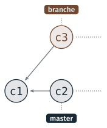
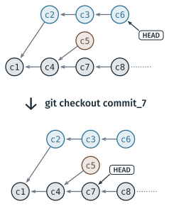
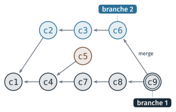
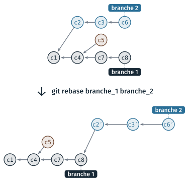

Branches, fusion et conflits#
Cette partie présente les branches, qui permettent de faire évoluer un projet sur plusieurs lignes de commits en parallèle, et HEAD, qui désigne le commit sur lequel on se trouve. Elle décrit ensuite les deux façons de réunir deux branches, la fusion et le rebase, et ce qui se passe quand deux branches ont modifié les mêmes lignes d’un fichier. Trois TD l’accompagnent, le TD 4a, le TD 4b et le TD 4c ; ils sont présentés en fin de page.
Les branches#
Une branche est une ligne de commits qui évolue indépendamment des autres. Deux branches peuvent partir du même commit et recevoir chacune leurs propres commits : on développe ainsi une fonctionnalité sans toucher à la version qui fonctionne, ou deux personnes travaillent en même temps sur le même projet.

Deux branches partent de c1 : master a reçu c2, et branche a reçu
c3.#
Pour git, une branche est un nom attaché à un commit, le dernier de la ligne.
Quand on fait un commit sur une branche, le nom avance jusqu’au nouveau
commit. La branche créée par git init s’appelle master, ou main selon le
réglage init.defaultBranch ; GitHub et GitLab nomment la leur main. Les TD
de la séance l’appellent master : sur un poste réglé autrement, lire main.
Commande |
Ce qu’elle fait |
|---|---|
|
liste les branches, et marque d’une étoile la branche courante |
|
crée une branche à partir du commit courant, sans s’y placer |
|
se place sur une branche : la copie de travail prend le contenu de son dernier commit |
|
crée une branche et s’y place |
$ git checkout develop
Basculement sur la branche 'develop'
$ git checkout -b documentation
Basculement sur la nouvelle branche 'documentation'
Changer de branche change les fichiers du dossier de travail. Un fichier ajouté sur une branche disparaît du dossier quand on se place sur une branche qui ne le contient pas, et réapparaît quand on revient. Avant de changer de branche, il faut donc avoir enregistré ses modifications par un commit. Si une modification non enregistrée devait être écrasée, git ne change pas de branche et affiche un message d’erreur.
Note
Depuis 2019, git a aussi la commande git switch <branche> pour changer de
branche, et git switch -c <branche> pour en créer une et s’y placer. Ces
commandes font la même chose que git checkout pour les branches ; la séance
emploie git checkout, comme les diapositives.
HEAD, le commit courant#
HEAD désigne le commit sur lequel on se trouve, celui dont la copie de
travail a le contenu. Le plus souvent, HEAD désigne une branche, et donc son
dernier commit ; git llog, l’alias défini au TD 3a, l’affiche sous la forme
HEAD -> develop.

git checkout suivi d’un identifiant de commit déplace HEAD sur ce commit.#
git checkout <identifiant> place HEAD sur un commit quelconque, pour
consulter un état ancien du projet. HEAD ne désigne alors plus une branche, et
git affiche :
$ git checkout 5bc07e7
Note : basculement sur '5bc07e7'.
Vous êtes dans l'état « HEAD détachée ». Vous pouvez visiter, faire des modifications
expérimentales et les valider. […]
HEAD est maintenant sur 5bc07e7 affichage du titre
Dans cet état, on lit les fichiers ; on n’y fait pas de commit, qui ne serait
rattaché à aucune branche. git checkout <branche> ramène HEAD sur une
branche.
Fusionner deux branches#
Deux branches se fusionnent : les modifications faites sur l’une sont ajoutées à l’autre. Git le fait de deux façons.
Le merge#
git merge <branche> ajoute à la branche courante les modifications de la
branche nommée. Quand les deux branches ont reçu chacune des commits depuis
leur point de départ, git crée un commit de fusion, qui a deux parents :
le dernier commit de chaque branche.

git merge depuis branche 1 : le commit de fusion c9 a deux parents,
c8 et c6.#
$ git checkout develop
$ git merge operations
Merge made by the 'ort' strategy.
src/operations.py | 14 ++++++++++++++
1 file changed, 14 insertions(+)
create mode 100644 src/operations.py
Pour un commit de fusion, git ouvre un éditeur dans le terminal, avec un
message déjà écrit : Merge branch 'operations' into develop. Sous Windows,
cet éditeur est vim ; la page Git et Git
Bash explique comment en sortir.
Quand la branche courante n’a reçu aucun commit depuis que l’autre en est partie, il n’y a rien à réunir : git déplace le nom de la branche courante jusqu’au dernier commit de l’autre, sans créer de commit. C’est une avance rapide, en anglais fast-forward, et git affiche :
$ git merge documentation
Mise à jour 71e283a..b2f6527
Fast-forward
README.md | 4 ++++
1 file changed, 4 insertions(+)
Le TD 4a fait les deux : un premier merge en avance rapide, puis un second qui crée un commit de fusion.
Le rebase#
git rebase réunit deux branches autrement : il refait les commits de la
branche à mettre à jour, un par un, au bout de l’autre branche. L’historique
redevient une seule ligne, sans commit de fusion.

git rebase branche_1 branche_2 refait les commits de branche 2 au bout
de branche 1.#
git rebase <branche de base> [branche à mettre à jour]
Sans second argument, c’est la branche courante qui est mise à jour. Les commits refaits sont de nouveaux commits : ils ont le même message et apportent les mêmes modifications, mais leur parent a changé, et donc leur identifiant aussi. Les anciens commits ne font plus partie d’aucune branche.
Avertissement
Le rebase réécrit l’historique de la branche. Une branche que quelqu’un d’autre a déjà récupérée ne se rebase pas : son historique ne correspondrait plus à celui de sa copie. Le cours 6 y revient, avec les dépôts partagés.
Les conflits#
Git réunit seul deux modifications qui portent sur des fichiers différents, ou sur des lignes différentes d’un même fichier. Quand deux branches ont modifié les mêmes lignes de deux façons différentes, git ne peut pas choisir entre elles : c’est un conflit. Le merge s’arrête, et git affiche :
$ git merge main_code
Fusion automatique de src/main.py
CONFLIT (contenu) : Conflit de fusion dans src/main.py
La fusion automatique a échoué ; réglez les conflits et validez le résultat.
Git écrit les deux versions dans le fichier, à l’endroit du conflit, séparées par trois lignes de marqueurs :
<<<<<<< HEAD
import operations as op
=======
import re
from operations import *
>>>>>>> main_code
Entre <<<<<<< HEAD et ======= se trouve la version de la branche courante,
entre ======= et >>>>>>> main_code celle de la branche qu’on fusionne. Ces
marqueurs sont des lignes de texte ordinaires : laissés dans un fichier
Python, ils provoquent une SyntaxError.
Résoudre le conflit se fait en quatre temps :
ouvrir le fichier, et choisir pour chaque conflit la version à garder, ou écrire une version qui combine les deux ;
supprimer les trois lignes de marqueurs ;
enregistrer le fichier, puis le marquer comme résolu avec
git add;reprendre le merge avec
git merge --continue, qui crée le commit de fusion.
Pendant un conflit, git status liste les fichiers concernés sous « Chemins
non fusionnés », avec la commande qui abandonne le merge et remet la branche
dans l’état d’avant, git merge --abort. Un rebase peut s’arrêter de la même
façon ; il se reprend avec git rebase --continue.
TD de la partie#
Les trois TD continuent le projet créé au TD 3a, une petite calculatrice en Python.
TD 4a — Branches et fusions, 30 minutes : créer les branches
develop,documentation,main_codeetoperations, y écrire la description et le code du projet, puis les fusionner dansdevelop.TD 4b — Annuler et remettre à jour, 15 minutes : annuler une fausse manœuvre avec
git revert, puis mettre une branche à jour avecgit rebase.TD 4c — Créer et résoudre un conflit, 25 minutes : modifier le même fichier de deux façons sur deux branches, les fusionner, puis résoudre le conflit.
Les TD des autres parties sont dans Travaux dirigés de la séance 2.